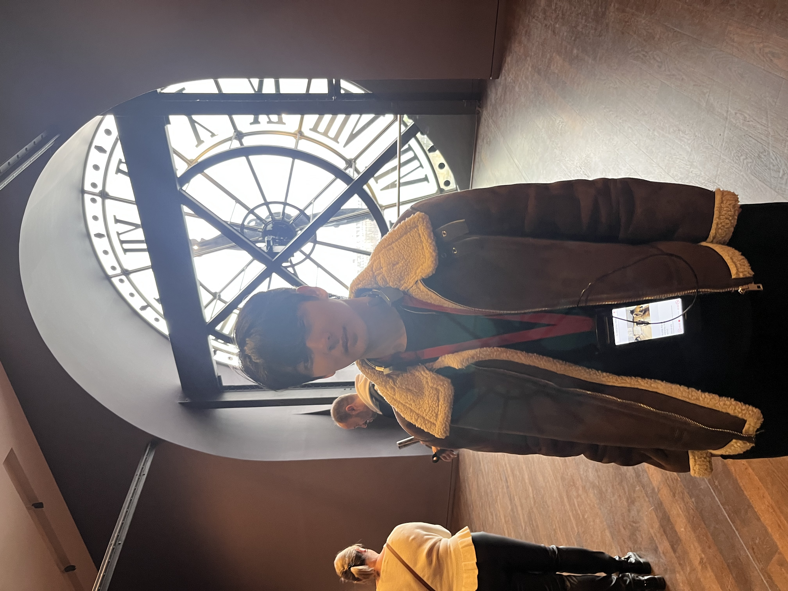

Academic direction
AI, machine learning, and software systems, grounded in an engineering perspective on real-world problems.
Seoul National University · AI & Software
Undergraduate student in Rural Systems Engineering and the Interdisciplinary Program in Artificial Intelligence, interested in building reliable systems and exploring embodied intelligence.

Profile
I returned to SNU in Spring 2026 after completing mandatory military service and expanded my studies into AI. I value concrete technical work: defining a problem clearly, designing an understandable solution, and following it through to a working system.
AI, machine learning, and software systems, grounded in an engineering perspective on real-world problems.
Physical AI, embodied intelligence, vision-language-action models, and attention-based architectures across modalities.
Selected work
A course project that combines domain modeling, recommendation logic, and an extensible object-oriented design.
Career-track-based SNU lab recommendation system · Computer Programming, Seoul National University
LabFinder is a command-line Java application that helps students compare research laboratories through the lens of their preferred career path.
Education & skills
Seoul National University · B.S. in Rural Systems Engineering and Interdisciplinary B.S. in Artificial Intelligence · expected February 2028 · GPA 3.89/4.3 (Fall 2026).
Updated September 2026
A concise, one-page CV with current education, relevant coursework, technical skills, research interests, and the LabFinder project.
Connect
For project details or an academic conversation, please get in touch.